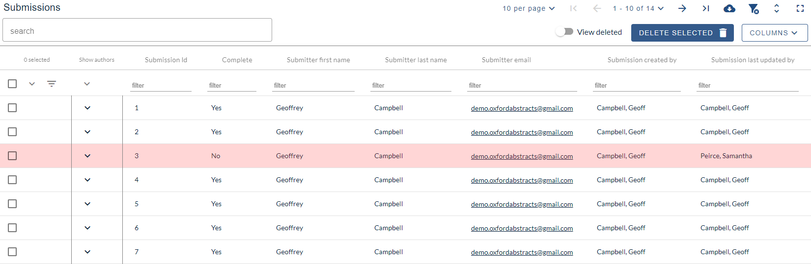
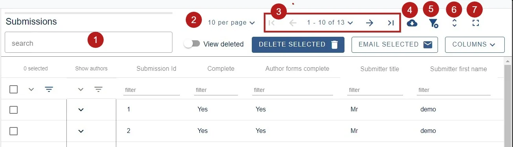
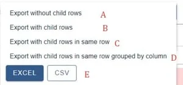
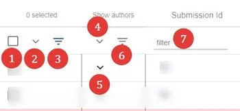
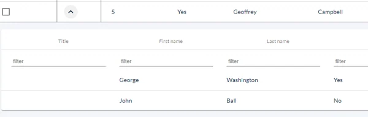

Working with tables
For event organisersNot an organiser?
The tables appear in several of the different stages within the Oxford Abstracts system - eg submissions, reviews, delegates etc. Before you work with any of the tables, it's advisable to become familar with their layout and tools.#
In the example below, the Submissions table is used. Like the Review tables, the Submission table has accordion rows. This is because submissions often have multiple authors, each with their own data such as affiliation, email address etc.
Some tables do not have the accordion tables - such as the Decision table, so where the article below refers to accordion row features, these will not apply in those tables without them.
Go to Event dashboard → Abstract Management → Submissions → Table to access the table
Entries are displayed in rows. Any with a pink background are incomplete, which means that the submitter has not completed a mandatory question, or has exceeded any set word limits.

The table has tools to search, order, filter and download reports.
NB: The precise layout of the tools below will adjust according to your screensize.
The controls, from left to right, are:

1) The field shown below is a general search bar, for entering any keywords. For example - entering 'data' will return every entry where that word / text string occurs.
2) Click on the arrow to the right of 10 per page to select how many rows you would like to appear in the submissions table view.
3) Pages - from left to right - The first page (greyed out), previous page, select page number, next page, last page
4) Download data on view (see blue panel below for further info).
5) Clear all filters
6) Truncate / untruncate text (Untruncated would display all text in responses, truncated would display the first 50 characters (see below). Either choice would be reflected in the spreadsheet exports (above).
7) Expand table to browser window.
NB: Options A-D below will NOT appear for tables without accordion rows.

A) Data from the 'parent' rows.
B) All the data from 'parent' and 'child' rows, but with the 'child rows' appearing as sub rows.
C) Data from 'parent' and 'child' rows, appearing in one row in Excel, as opposed to sub rows.
D) Same as (C), but presented by column.
E) Choose the format of your report.
8) View deleted submissions
9) Delete the selected submissions
10) Send emails
11) Click on the arrow to access the options for column display.
Columns#
The options will appear grouped into two columns.
Main Table - separated into two groups: Submission data, and Submission responses.
Accordion Tables - Author information
NB: For tables without accordion rows, you will just see one column for the main table.

Under Submission data, you will find a list of all the data relating to the submitter - eg name, email, last updated etc.
You can toggle each group as below:
| Display all fields | Hide all fields | Some fields are selected |
To choose which fields you would like displayed in the table, click on the down arrow.

When you have made your selection, click on the up arrow

When you have chosen the fields you would like displayed from Submission data, Submission responses, and the Accordion tables click the arrow to hide the selection window.

See Accordion tables below for more information on finding author data.
On the top left hand side of the table

1) Check boxes to select - eg, to delete. Choose the top one if you would like to select all rows (or all filtered rows if you have filtered any - see 3. below) in the table on that page, or select individually.
2) Click to reveal more options.
3) Filter the list according to the boxes checked - ie - all those checked will remain in view.
4),5) and 6) See Accordion rows, below.
7) Filter fields - filter by any keyword / text string. (For columns that contain numerical data, you can filter by minimum, exact, and maximum. You can also view a range by entering a figure in min, and a figure in max.)

Click on any header to order submissions alphabetically or numerically.
The down arrow will display from A-Z, (or 1-10) Click again to order from Z-A (or 10-1) (up arrow).
Accordion tables#
You will see a column of down arrows in the second column of the table, headed Show authors. These expose the child rows. Click on the top one (red) to reveal all author and affiliation child rows, or select individually (green).
The icon annotated with the purple arrow allows you to hide the empty rows when filtering in the accordion rows.
Each review will appear in 'child' rows.

When you reveal any accordion row, an additional icon will appear. This will allow you to truncate or untruncate the list of authors on display.

Each author will appear in 'child' rows. These can be filtered and ordered in the same way as the 'parent' rows.

Didn't solve it? Ask our support team
No question is too small, and there's no charge for asking. Raise a ticket and someone who knows the software will pick it up.
Did this page solve it?
Thanks — this helps us fix it.